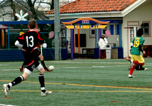
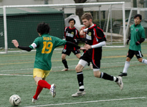
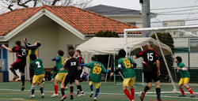

|
YC&AC Sunrday 13th December.
Up in the Yokahama Hills YCAC hosted PUMAS Vs GUARANA REP. In a very tight league, a win for the Pumas would have seen them jump up to third in the table, but with some injuries and last minute pull outs their squad was a little ‘thin’.
Despite this, the Pumas started brightly with some good through balls coming from Romen and some lung busting runs from Tom. At times Pumas kept the ball well, getting into some promising positions but more often than not failing to deliver a quality ball into the strikers. After just four minutes, pumas took the lead when the ball fell to Sid after a quality through ball from Tom, Sid took a touch and saw the Guarana goalkeeper already committed, lying on the ground, before lifting the ball over with the outside of his right boot – lovely finish. 1-0.
The Pumas failure to deliver from the wide areas would cost them dearly however and the pace and movement of the Guarana team was soon going to prove too much. Guarana Rep, sitting bottom of the league going into this match were playing extremely well with short, sharp passes hard to handle for the Pumas backline. Keiran made some fine stops in the 1st half before one finally got past him. With about 5 minutes of the 1st half remaining, the Guarana Striker placed a nice finish over kierens head giving him little chance following some nice link up play.
1-1 (half time)
After a half-time ‘bollocking’ from Sid. The pumas started the 2nd half well with some solid defending from Andy and Tatsuya winning plenty of headers. You could tell the game was starting to favor the Pumas when Andy and Mikhail decided to play a 1-2(3-4-5-6) on the edge of their own box before eventually clearing the ball. With a good 10 minutes gone in the 2nd half, the pumas finally got their goal. A short pass from Romen (I think) to the feet of Mark resulted in a lovely 20 yard strike into the top corner. A short piece of great refereeing followed when he thought the ball had hit the bar and come back out when in reality it had bounced off the back of the frame.

With 10 minutes to go, Pumas wasted chances to wrap the game up. Mark hit a very good chance straight at the keeper while Sid hit the bar from close range. The more Pumas tried the more Guarana were getting back into the game. Kieran did well to save a couple of chances but the pressure told with 2 minutes to go when the Guarana striker fired in a good low shot that Kieran could just parry into the path of another attacker who finished into an empty net.
Both clubs then had chance to win the game with chances at either end but all missed in the dying seconds. A fair result in the end..
Report by Mark Ralph
|